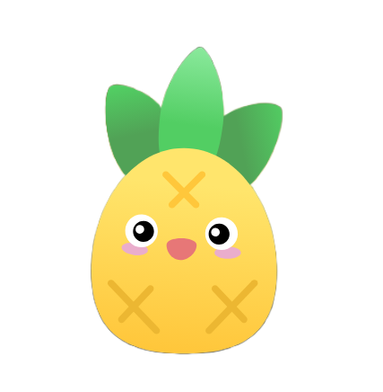

성향에 맞는 종목을 만나고 건강한 장기 투자 관계를 만들어가는 서비스
기획 · 개발 · 알고리즘 · 배포까지
전 과정을 직접 책임지는 풀스택 팀.
투자 경험 · 관심 섹터 · 투자 기간 · 위험 선호를 온보딩으로 받아 개인화의 출발점을 만든다.
성향과 종목 Stock DNA를 매칭해, “왜 나에게 맞는지” 근거와 함께 추천한다.
관심 · 보유 · 포트폴리오 · 매매일지로 매수 이후의 행동까지 이어서 관리한다.
정보를 많이 주는 서비스는 많습니다. 나에게 맞게 주는 서비스는 없었습니다.
우리는 ‘선택’이 아닌 ‘지속’을 만드는 4가지를 구현했습니다.
성향을 수집해, 나와 맞는 종목을 Stock DNA 근거와 함께 추천한다.
KIS 실시간 시세·호가로 매매하고, 투자자들과 의견을 나눈다.
관심·보유·포트폴리오로 관리하고, 매매일지로 매수·매도 이유를 남긴다.
쌓인 사용자 데이터를 바탕으로 추천 사유 설명·맞춤 인사이트를 제공한다.
행동은 데이터가 되고,
데이터는 다시 당신의 선택을 바꿉니다.
단순한 설문이 아닙니다. 사용자의 투자 기준을 구조화하고, 중요도에 따라 가중치를 반영합니다.
→ 당신의 선택 기준을 데이터로 변환합니다.
22개 섹터 복수 선택 + 선호 보유기간(1개월~2년+)
목적 · 경험 · 손실 허용 · 자금 의존도 · 기간(×2) · 하락 반응 — 각 1/3/5점
6문항 → 5벡터 → 위험축(목적·자금·하락반응) × 기간축(보유기간) → 4가지 투자 유형 + 경험 배지
표시·배지용 3유형 · 실제 추천은 우측 5벡터 매칭
“이 자금은 안정적인 연인인가요, 가능성을 보는 썸인가요?”
세로축 위험 성향(종합점수 ↑ = 공격) × 가로축 투자 기간 → 4분면.
예시 유저: 종합 24점 · 장기 · 관심 IT서비스 → 🌱 성장 동반형
→ 이후 JUMANCHU DNA와 궁합 매칭 (8p)
이 데이터는 Stock DNA와 매칭되는 “나의 DNA”가 됩니다.
예시 — JUMANCHU 000000 · Stock DNA → 다음 장 매칭에 사용
복잡한 재무·시장 데이터를 0~100 분위수로 정규화하여,
종목 간의 성격을 왜곡 없이 비교할 수 있도록 돕습니다.
시장 내 상대적 위치를 보여주는 가장 객관적인 지표
🌱 성장 동반형 유저 × JUMANCHU 궁합 계산
위험성향 4 · 경험 3 · 기간 장기 · 관심 IT서비스
화면 표시는 정수로 반올림 · 후보마다 반복 → 점수순 상위 추천
신뢰는 결과가 아니라, 근거에서 나옵니다.
추천 이후의 모든 행동은 데이터로 기록됩니다.
그리고 그 데이터로 다시 당신에게 맞는 솔루션을 제공합니다.
관심부터 보유까지, 자산을 한 곳에서 관리합니다.
왜 사고 팔았는지 기록해, 투자 습관을 데이터로 만듭니다.
숫자는 시스템이 계산하고, AI는 그 결과를 사람의 언어로 풀어 줍니다.
보유 종목 1개당 재무 · 성장 · 적합도 요약 + 종합의견 4개 문장을 생성합니다. 유일한 LLM 사용처.
프롬프트에 “제공된 수치만 사용, 목표가 · 전망은 지어내지 말 것”을 명시합니다.
궁합 점수 · 추천 사유 · 등급은 코드로 계산(규칙 기반). 생성형 AI는 장투 리포트 수치 분석에만 씁니다.
엔진은 GMS · GPT-4o. AI는 결과를 이해시키는 UX 보조입니다.
Pinia · vue-router · Vite · axios
11개 화면 · SPA
DRF · 7 도메인 앱 · JWT(simplejwt)
drf-spectacular 문서
정규화 도메인 스키마
Redis 캐시
View는 단순하게, 비즈니스 로직은 Service로 분리 — 유지보수와 확장에 최적화된 구조
외부 API · 캐시 · DB를 Service 계층에서 통합 관리하여 성능과 안정성을 동시에 확보
API 남용 방지를 위한 Rate Limit 적용 — IP 기반 · 원자적 카운터로 안정성 확보
캐시로 API 호출 최소화 → 데이터 특성에 따라 TTL 차등 적용 (실시간성 vs 안정성 균형)
상위 종목 데이터를 주기적으로 미리 적재 → 사용자 요청 시 캐시만 조회 (TTL 기반 운영)
시세 → 지표 → 분석 데이터 → 점수 산출까지 파이프라인 자동화
종목 메타 및 재무 데이터 갱신
뉴스 및 외부 데이터 지속 수집
데이터 의존성을 고려한 순차 처리 + 실패 복구 구조 설계 → cron 기반 스케줄링과 워커 분리로 안정적인 배치 운영
실시간 요청은 가볍게, 무거운 처리는 배치로 분리하여 성능과 안정성을 동시에 확보
공통 AppNavbar · 상단 내비 · 다크모드 토글 SparklineChart · 미니 차트 재사용 vue-router
로그인 없이 둘러보고, 로그인하면 내 자산을 관리합니다.
원칙 — 화면 지역 상태(탭·필터·모달)는 스토어에 안 넣고 view의 ref로 → 스토어 비대화 방지
영속 3단 분리 — 보안(access)=메모리 · 세션(refresh)=httpOnly 쿠키 · UX(theme·favorites·recent)=localStorage

주식 랭킹 100개를 한 번에 불러오는 과정에서 API 호출 한도·속도 제한으로 약 10초 이상의 딜레이 발생
서버 기동 시점부터 데이터를 배치로 선요청 후 캐싱하는 구조로 개선
로딩 시간 10초 → 1.5초로 단축, 체감 성능 크게 개선
프론트엔드에 남아있던 목업 하드코딩 데이터로 인해 백엔드 데이터가 정상 전달되지 않음
팀원 3명이 파트를 나눠 버그 구간을 병렬 분석 → 결과 취합해 디버깅
데이터 흐름 정상화 · 실 API 기반 동적 데이터 반영 완료
초기 협업 시 브랜치 전략·커뮤니케이션 기준 부재로 혼선 발생
Git 브랜치 전략·작업 프로세스(merge 방식·네이밍 규칙)를 사전 정의
협업 효율 향상 · 충돌 최소화 · 작업 속도 개선
이제, 실제로 보여드리겠습니다.
기획의 중요성을 다시 한번 체감했습니다. 처음에는 머릿속 아이디어를 직접 구현한다는 사실에 들떠 제대로 된 기획 없이 곧장 개발에 뛰어들었지만, 진행될수록 모든 기술은 결국 사용자 경험과 비즈니스 가치를 위한 수단임을 깨달았습니다. 기능은 동작했지만 그것만으로는 충분하지 않았고, '무엇을, 왜, 누구를 위해 만드는가'를 정의하는 개발 앞단의 과정이 반드시 선행되어야 함을 몸으로 배웠습니다.
타 금융 서비스와의 차별점을 기반으로 명확한 MVP를 정의하며 프로젝트 정체성을 확립했습니다. 알고리즘 설계와 백엔드 협업으로 DB를 최적화하고, 단순 조회를 넘어 가공·관리·FE 연동까지 잇는 End-to-End 데이터 파이프라인을 구축하며 시야를 넓혔습니다. 기획부터 풀스택 개발을 리딩하며 애자일한 일정 조율로 병목을 해결했고, 코딩 에이전트·영상 특화 AI 등 최신 기술을 실무에 도입해 기술적 유연성을 길렀습니다.
개발 과정에서 직무 간 소통이 중요하다고 느꼈습니다. 소통이 원활하지 않았다면 백엔드 사수와 브랜치 협업이 이루어지지 않았을 뿐더러 프로젝트를 시간 내에 완성할 수 없었을 것 같습니다. 또한 사용자의 경험과 눈에 띄는 UX/UI를 오류 없이 구현하는 데 많은 점검과 노력이 필요하다는 것을 느꼈습니다.
궁금한 점을 자유롭게 질문해 주세요.
주만추 — 자연스러운 주식과의 만남.